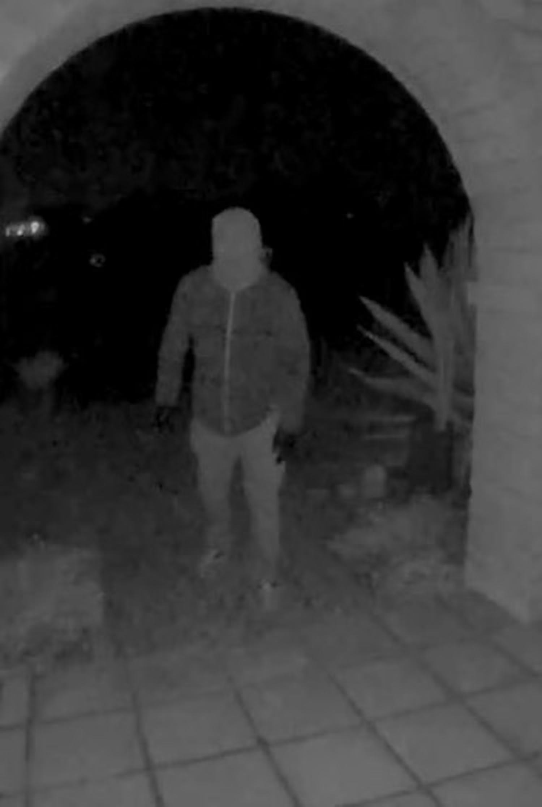
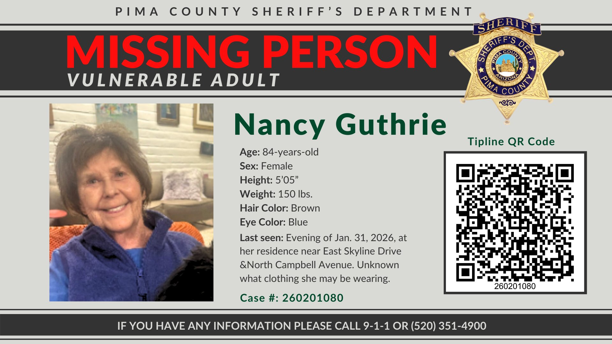
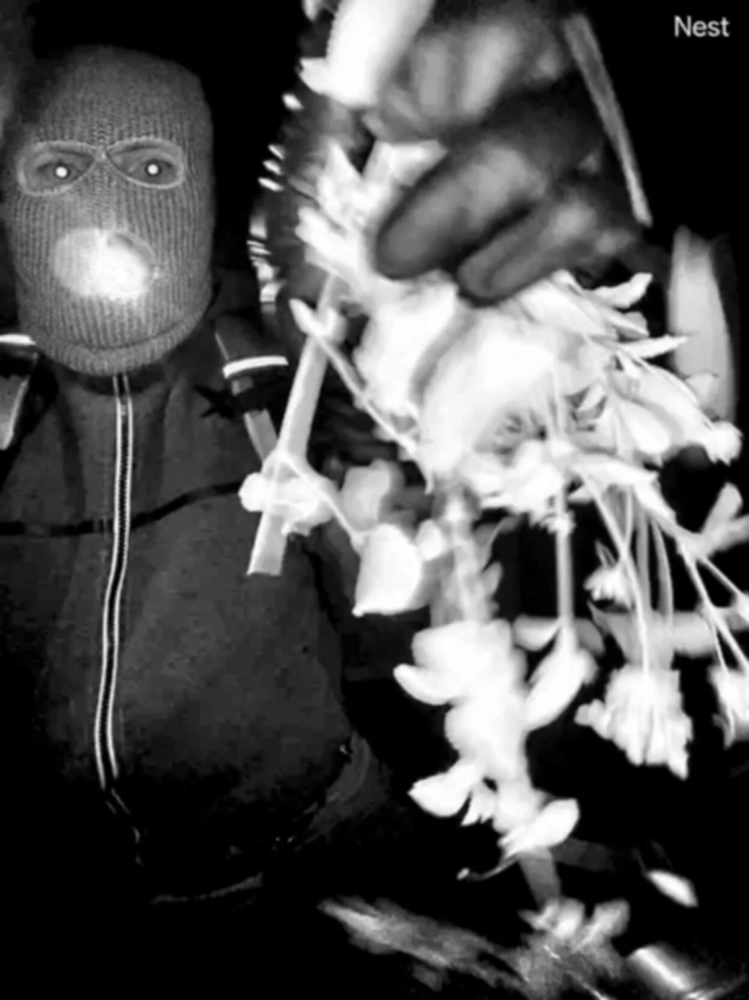
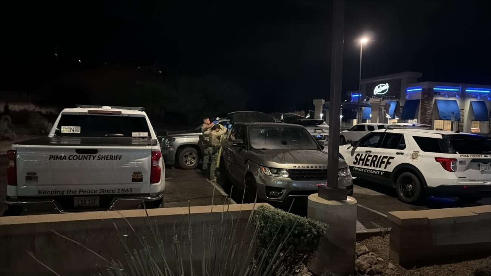
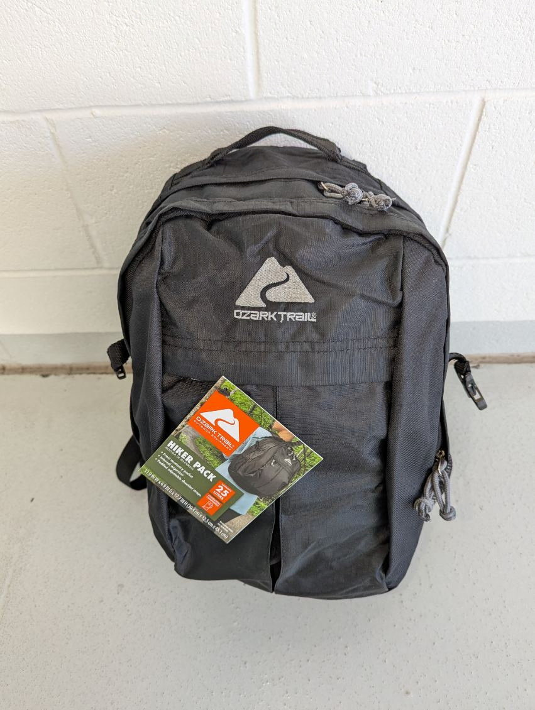
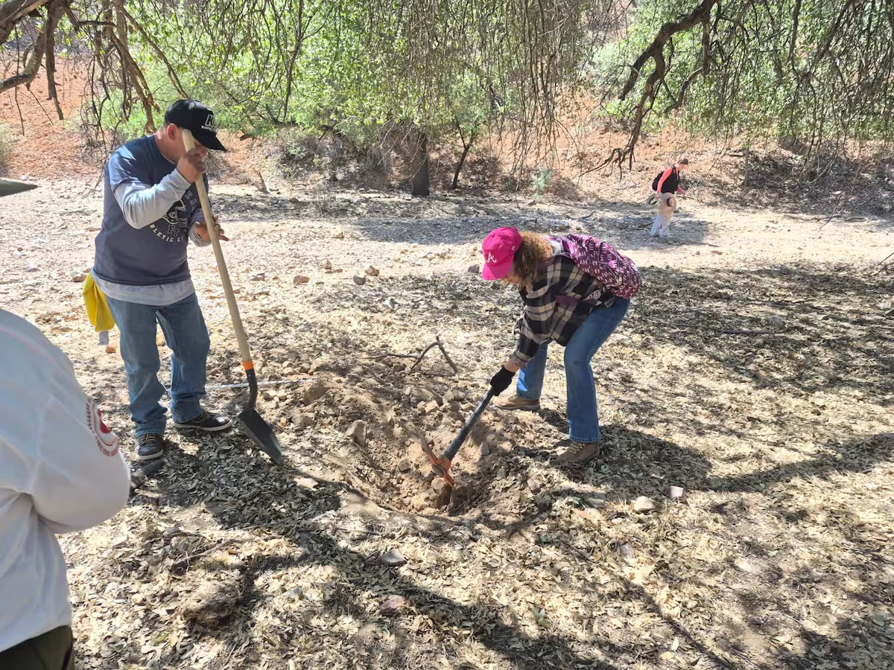

Nancy Guthrie, 84, was reported missing from her home in Tucson, Arizona on February 1, 2026. Authorities believe she was abducted in the early morning hours of February 1 after being last seen the previous evening.
This page is being updated / under construction.
A masked suspect was captured on Nancy Guthrie's doorbell camera footage. The suspect's identity and exact date of the incident remain under investigation.

Nancy Guthrie took an Uber to her daughter’s home for dinner. Investigators have spoken with the Uber driver, according to the Pima County Sheriff.
Nancy Guthrie was dropped off at her home by her son-in-law, Tommaso Cioni, after dining at the home of her daughter Annie. The drop-off occurred at 9:48 p.m.
Cioni waited until Nancy was inside before driving off. The garage door closed at 9:50 p.m., indicating she was home and, authorities assume, preparing for bed.
Nancy's doorbell camera went offline at 1:47 a.m. on February 1st. This marks the first technical anomaly in the hours after she was last seen. Footage captured before the disconnection shows a masked suspect at Nancy's front door.
The exact circumstances of the disconnection remain unclear, but investigators noted that video from this time period would have been crucial evidence.
Home security software detected a person on camera at 2:12 a.m., approximately 25 minutes after the doorbell camera went offline. However, no video was available from this detection, indicating the camera had already been disabled.
This automated alert provided evidence that suspicious activity was occurring at the home during the early morning hours.
Nancy's pacemaker app showed a disconnect from her apple watch at 2:28 a.m., approximately 40 minutes after the doorbell camera went offline.
Nancy relies on her pacemaker for her health, and investigators would later use a "signal sniffer" device to attempt to track the pacemaker's location.
Friends contact Nancy's family after she fails to attend a virtual church service. After Annie and Tomosso drive over to check on Nancy, they found the backdoor open and the house empty.
The family called 911 at approximately 12:03 p.m. to report Nancy missing. According to dispatch audio, Nancy was described as "a white female, 84 years of age, 5 feet 2 inches, medium build, brown over blue," and dispatchers noted she suffers from high blood pressure, has a pacemaker, and has cardiac issues.
Patrol arrived at the residence at 12:15 p.m. and immediately determined she was missing under "concerning circumstances." Given her limited mobility and dependence on daily medication, authorities immediately launched an urgent search.
The Pima County Sheriff's Department released the first missing person's flyer for Nancy Guthrie, distributing it to the public and media outlets as the search continued.

The Pima County Sheriff's Department held its first news conference regarding Nancy Guthrie's disappearance, providing updates to the media and public on the early stages of the investigation.
Sheriff Chris Nanos confirmed the disappearance was being treated as a crime. "We believe we do in fact have a crime scene," Nanos told reporters, urging neighbors to review home video footage.
Nanos stated he believed Guthrie was "abducted" in the middle of the night and "didn't walk from there. She didn't go willingly."
~5:00 PM: KOLD News 13 received an alleged ransom note. The station immediately forwarded it to the FBI and Pima County Sheriff's Department and opted while choosing not to report on it..
~6:40 PM: TMZ received what appeared to be the same initial ransom note.
The notes contained specific details about items in Nancy's home and included demands for payment in Bitcoin, along with deadlines. The inclusion of non-public information piqued investigators' interest and led some to believe the notes might be genuine.
Demands: $6 million to a specific Bitcoin address for Nancy's release. The note included specific non-public details that caught investigators' attention.
- Set deadline: Thursday 5 p.m. local time
- Warning that missing the deadline would result in a changed "demand"
- Specified that Nancy Guthrie would be returned to Tucson within a certain time frame
- Apple Watch location (specific, non-obvious placement)
- Backyard floodlight described as "destroyed"
- Specific phrasing about Bitcoin procedures and next steps suggests local knowledge
- Provided no means for the family to contact the sender
12:59 PM: The Pima County Sheriff's Department posted on X stating they are "aware of reports circulating about possible ransom note(s) regarding the investigation into Nancy Guthrie." The department stated they are taking all tips and leads very seriously and anything that comes in "goes directly to our detectives who are coordinating with the FBI."
The FBI showed the alleged ransom letter to Savannah Guthrie.
Blood is discovered outside the front door of Nancy's home, later confirmed to be hers. Additional blood was also found inside the house. The doorbell camera that had been mounted near the entrance was also found to be missing.

The Guthrie demands proof that Nancy was alive before agreeing to any negotiations. Savannah Guthrie stated: "We need to know without a doubt that she is alive and that you have her. We want to hear from you and we are ready to listen. Please reach out to us."
Camron Guthrie pleads: "Whoever is out there holding our mother, we want to hear from you. We haven't heard anything directly. We need you to reach out and we need a way to communicate with you so we can move forward. But first we have to know that you have our mom."
The FBI showed the alleged ransom letter to the Guthrie family and coordinated with the family on response strategy.
FBI Statement: Heith Janke, special agent in charge of the FBI's Phoenix office, made an official statement confirming the existence of an alleged ransom note. The note included details about an Apple Watch and a floodlight, as well as deadlines and monetary amounts. Janke said decisions about ransom would be made by the Guthrie family, who have been in touch with investigators. "As with every lead, we are taking it seriously," Janke said.
Reward Offered: The FBI announced a $50,000 reward for information regarding Nancy Guthrie's whereabouts or that led to an arrest and conviction in the case.
Ransom Impostor Arrested: A California man was arrested for sending an "imposter" ransom note to the family. Janke warned: "To those impostors who are trying to take advantage and profit from this situation, we will investigate and ensure you are held accountable for your actions."
~4:00 PM: The deadline set in the first alleged ransom note passed without the family receiving proof of life or direct contact from the alleged kidnappers.
FBI agents canvassed homes near Nancy Guthrie's residence. At least five Pima County Sheriff's vehicles arrived outside the property, with one parked directly in front. Deputies placed orange cones to block traffic in and out of the road.
Second Message Received: Around 11:00-11:45 a.m., KOLD News 13 received a second alleged ransom message through its anonymous online news tip system and immediately forwarded it to the FBI and Pima County Sheriff's Department. TMZ also received a second alleged ransom note.
Unlike the first communication, this message made no new demands and provided no proof of life. KOLD News 13 declined to call it a ransom note: "We are not calling this a ransom note. We are calling it a message because no further demands were made." The message came from a different IP address than the first, but both appeared to use similar cloaking software.
Vehicle Activity: At 9:00 p.m. on Friday, a blue SUV was towed away from Nancy Guthrie's driveway.

Nancy Guthrie's family released a video message in response to the second message sent to KOLD 13 News on Friday. Savannah Guthrie appeared alongside her sister Annie and brother Cameron.
Savannah stated: "We received your message, and we understand. We beg you now to return our mother to us so we can celebrate with her. It is the only way we have peace. This is very valuable to us, and we will pay."
The FBI confirmed the video statement was a direct response to the message sent the day before.
Investigation Activity: KOLD 13 News confirmed that investigators went to a Circle K on Oracle Road in connection with the case, suggesting law enforcement was pursuing leads in the surrounding area.
Overhead video showed investigators focused on the septic tank in Nancy Guthrie's backyard. The Pima County Sheriff's Department stated it will continue to maintain a presence at Nancy Guthrie's home for security reasons at the family's request.
The second deadline set in the initial ransom note passed without any contact from the alleged kidnappers.
Family Statement: Savannah posted a message to social media as the search continued into its second week: "Thank you so much for all of the prayers. We believe our mother is still out there. We need your help. We are at an hour of desperation."
Law Enforcement Update: The FBI stated that investigators are not aware of any continued communication between the Guthrie family and the suspect kidnappers. "For more than a week, FBI agents, analysts, and professional staff have worked around the clock to reunite Nancy Guthrie with her family," the FBI told KOLD 13 News.
Both the FBI and the Pima County Sheriff's Department confirmed again that there are no suspects or persons of interest in the case.
The FBI and Pima County Sheriff's Department released doorbell camera surveillance images of a masked suspect at Nancy's front door.
The suspect, described as male, approximately 5'9" to 5'10" with average build, was wearing:
- Black face mask
- Black gloves
- Black Ozark Trail Hiker Pack backpack (25-liter capacity, sold exclusively at Walmart)
Images show the suspect appearing to tamper with Nancy's front-door camera, covering the lens with vegetation.



Man Detained: Within hours of the FBI releasing the suspect video, a man identified only as "Carlos" was detained during a traffic stop south of Tucson in Rio Rico. FBI and Santa Cruz County agents took him in for questioning regarding Nancy Guthrie's disappearance.
Carlos told reporters he was shocked by the detention. "I work in Tucson for GLS. I might have delivered a package to her house, but I never kidnapped anybody," he said. He explicitly stated that he does not know Nancy Guthrie.
FBI agents showed Carlos's mother-in-law a video of the suspect, saying "my eyes and my eyelashes look the same" — suggesting authorities may have initially suspected a physical resemblance. However, investigators quickly cleared him.
Gloves Found: Black gloves were recovered approximately 2 miles from Nancy's home and contained DNA evidence. The gloves appeared to match those worn by the suspect in the doorbell camera footage. However, the DNA profile did not match anyone in the FBI's national database (CoDIS). Later analysis traced the gloves to a local restaurant worker with no connection to the case.

The FBI increased the reward to $100,000 and released a more detailed description of the suspect. The man is described as 5-foot-9 to 5-foot-10 with an average build.
The FBI also identified that the man seen in the security video was wearing a black, 25-liter Ozark Trail Hiker Pack—a backpack sold by Walmart for less than $11.
The FBI reported receiving more than 13,000 tips since February 1.
Alleged Informant: Around 8:00 a.m., TMZ received a second email from a person claiming to know the kidnapper's identity, expressing frustration that he is "not being taken seriously" and indicating the situation "has changed from Wednesday to Thursday."

New DNA Evidence: The Pima County Sheriff's Department announced that new DNA samples from the crime scene have been sent for testing. The DNA is not from Nancy Guthrie or anyone in close contact with her.
The PCSD confirmed that several gloves have been found during the investigation, with the closest approximately two miles from the crime scene.
Major Search Warrant Operation: Around 9:00 p.m. Friday, a large police presence was reported near First and Orange Grove, less than two miles from the crime scene. The Pima County SWAT team and FBI executed a federal search warrant at a Tucson-area home.
Three people were detained at the home. A fourth person was detained after a traffic stop at a Culver's restaurant parking lot. A gray/silver Range Rover was searched and towed from the parking lot.
Multiple agencies were present, including Pima County Sheriff's Department, FBI, Marana Police Department, Oro Valley Police Department, and Sahuarita Police Department. All four people detained were later released.

A source close to the investigation said investigators believe Nancy Guthrie's disappearance was the result of "a burglary gone wrong" rather than a planned kidnapping. Multiple experts who reviewed the doorbell camera footage confirmed the incident did not appear to be a planned kidnapping.
The inside source also stated that "widespread investigative belief is Nancy Guthrie could be alive."
DNA Results Pending: The FBI announced it is waiting for confirmation of DNA testing on gloves found near the Guthrie home. The bureau received preliminary DNA results on February 14 and is awaiting quality control and official confirmation.
Backpack Identified: Sheriff Nanos announced a major breakthrough in the investigation. The 25-liter "Ozark Trail Hiker Pack" backpack worn by the suspect in the doorbell camera footage was definitively identified and became "one of the most promising leads" in the case.
"This backpack is exclusive to Walmart and we are working with Walmart management to develop further leads," Nanos said. Investigators reviewed surveillance video from Walmart locations and obtained company records of all backpack purchases from the past several months to identify potential suspects.
The suspect's other clothing "may have been purchased from Walmart but is not exclusively available at Walmart," according to the Pima County Sheriff's Department.

Signal Sniffer Deployed: Investigators deployed a "signal sniffer" device mounted on a helicopter to detect signals from Nancy's pacemaker. The high-tech tracking tool is designed to help detectives pinpoint her location by detecting the low-power electronic signals emitted by her pacemaker.
According to sources, the helicopter carrying the device flew slowly and at a low altitude over the area where investigators were still hoping to find Guthrie. Signal sniffers are commonly used in missing person cases because they can detect electronic signals from devices like pacemakers.
The FBI continued its broad investigation by visiting local gun stores and showing agents' images to store owners. Investigators were attempting to identify suspects by cross-referencing the doorbell camera footage with gun purchase records in the Tucson area.
At Armor Bearer Arms, FBI agents asked the owner, Phillip Martin, to review a packet of roughly 18-24 images and names to check if any had purchased a gun from the store in the past year. Martin searched his point-of-sale system for all the names but found no matches.
Martin noted that the pictures didn't look like any of his customers, but they reminded him of the surveillance video from outside Nancy Guthrie's front door. He observed that most of the images appeared to be mugshots, with similar physical characteristics like facial hair. "Not every single person looked exactly the same, but I would say that 80% of them were Hispanic," Martin said.

Sheriff Chris Nanos announced that DNA recovered from a glove found two miles from Nancy Guthrie's home does not match DNA found inside her home. Neither DNA sample produced a hit in the FBI's Combined DNA Index System (CODIS).
With no matches in law enforcement databases, the PCSD is now turning to commercial genealogical databases like Ancestry.com to search for familial matches to the glove DNA. This method, made famous by the 2018 arrest of Golden State Killer Joseph James DeAngelo, involves building family trees from relative DNA uploads to identify suspects.
Investigation Activity: The PCSD said investigators returned to Nancy Guthrie's home on Tuesday, though details were not being shared at that time.
The Pima County Sheriff's Department announced that investigators are currently analyzing biological evidence found at Nancy Guthrie's home. DNA profiles remain under lab analysis, with the number of profiles and other details remaining part of the active investigation.
Mexican Authorities Inquiry: The PCSD received several requests for confirmation about reports that the FBI has reached out to Mexican authorities about the investigation. The department stated it is not confirming or releasing any information about potential international coordination at this time.
Reward Increased Again: An additional donor stepped forward, offering $100,000 for information leading to an arrest in the case. Combined with the 88-CRIME reward of $102,500 and the FBI's $100,000 reward, the total reward now exceeds $300,000.
Sheriff Expresses Skepticism: Sheriff Chris Nanos acknowledged an "absolute possibility" that the ransom notes have nothing to do with Nancy Guthrie's disappearance, though authorities are continuing to take them seriously.
Property Searches: Investigators returned to Nancy Guthrie's home and searched a septic tank in her yard. Authorities also returned to Annie Guthrie's home, located approximately 4 miles from her mother's residence, conducting a three-hour search.
Volunteer Search Efforts: A well-known Facebook group joined the search for Nancy Guthrie on Thursday, with volunteers from the community participating in organized search efforts.
The Pima County Sheriff's Department announced the road near Nancy's home was being temporarily converted to one-way traffic due to heavy visitor and media presence in the area.
There were no major developments in the Nancy Guthrie investigation on Friday. The DNA recovered from inside Nancy Guthrie's home remains under analysis and does not belong to Nancy or anyone close to her.
North Camino Escalante was converted to a one-way street on February 21 to relieve traffic congestion in the neighborhood. However, the measure has not helped as hoped, with neighbors continuing to complain about "clogged roads, trespassing, noise, and accumulating trash along the road."
In response, Pima County created a large temporary no-parking zone to be enforced by the Pima County Sheriff's Department. Tickets for violations can be as high as $250.

Community volunteers and vloggers took to the desert on Sunday to search for clues in Nancy Guthrie's disappearance. Organizers distributed maps and a list of items for volunteers to look for, including clothing, jewelry, masks, and gloves.
Volunteers searched the Pima Wash area and recovered several articles of clothing and a backpack, which they reported to the PCSD. However, the sheriff's department determined the bag appears to have been outside for longer than three weeks and does not appear to be a viable lead for the investigation.
A law enforcement source told 13 News that a photo of the suspect in the Nancy Guthrie case appears to have been taken on a different day than the other images released by the FBI. The photo in question shows the suspect without the backpack or visible firearm seen in other video and photographic evidence.
The PCSD released a statement: "There is no date or time stamp associated with these images. Therefore, any suggestion that the photographs were taken on different days is purely speculative."
DNA Complexity: Nanos acknowledged that some of the biological samples recovered feature DNA from multiple people, possibly including the suspect. He revealed that it could take months to separate the DNA samples so they can be entered into law enforcement databases.
Savannah Guthrie released a new video announcing the family is offering a $1 million reward for information leading to Nancy Guthrie's recovery.
Savannah stated: "Someone out there knows something that can bring her home. Somebody knows." She also thanked supporters: "We feel those prayers. Please keep praying without ceasing."
New signs appeared at Nancy Guthrie's home, including a message to the alleged kidnapper: "To Nancy's Kidnapper - Unintentional things happen, and we get that. Life is made up of choices. Please make the right one now."
Several unmarked vehicles arrived at Nancy Guthrie's home early Wednesday morning. Jon Edward, Assistant Special Agent in Charge of the FBI in Tucson, was present. Approximately 10 agents were observed walking around the home and taking photographs.
KOLD 13 News confirmed that some of the people at the home were from the U.S. Attorney's Office for the District of Arizona. Federal prosecutors were present to assist the FBI with a "routine legal process."

A law enforcement source told 13 News that Nancy Guthrie's home will be returned by the end of the week or the following week. The home has been treated as a crime scene since her disappearance nearly four weeks prior.
Activity at the home diminished on Thursday, with reduced law enforcement presence compared to the previous day's FBI and federal prosecutor activity.
The Pima County Sheriff's Department announced on Friday that it is "refocusing resources" in the Nancy Guthrie investigation. While the investigation will continue until Guthrie is found or all leads are exhausted, resources will be directed toward "detectives specifically assigned to this case."
The PCSD stated it will continue to maintain a patrol presence in Guthrie's neighborhood and is continuing to examine surveillance video of different vehicles in the area, including locations further away from the crime scene.
Most media outlets have departed the neighborhood, with only Fox News and NewsNation remaining present in the area as the investigation entered its final week of February.
The Pima County Sheriff's Department announced that the pair of black gloves with DNA evidence found near Nancy Guthrie's home are not connected to her disappearance.
The DNA from the gloves, recovered approximately two miles from the crime scene, was traced back to a restaurant worker in the area. The PCSD stated the worker "is not considered part of this investigation."
Nearly all of the 16 pairs of gloves found during the investigation were traced back to searchers who discarded them in the area. The PCSD reported that labs continue working on other DNA evidence in the case.
Pima County Sheriff Chris Nanos gave a one-on-one interview to KOLD 13 News. Nanos expressed cautious optimism about the case: "I have no way of knowing when we will solve this, but I believe we will solve it."
He acknowledged that more than a month into the investigation, law enforcement is in a waiting phase. "The evidence they have right now simply isn't enough to find the suspect or suspects," according to Nanos, who indicated investigators are playing a waiting game as they await further test results and potential leads.
KOLD 13 News confirmed that investigators have been asking neighbors about internet and power outages on the night Nancy Guthrie went missing. Investigators are also requesting permission from homeowners to view security camera video from January 11, 24, and 31, and continuing to search for any video from Sunday, February 1.
The Pima County Sheriff's Department announced on March 3 that it is in the process of returning Anne Guthrie's vehicle, which has been held by investigators for several weeks as part of the investigation.
TMZ received two new notes on Monday morning from the individual who has been offering information on the kidnappers for nearly two months. The person reiterated their demand for 1 Bitcoin to "deliver them on a silver platter."
Shortly after the first note, a second message arrived claiming: "I Saw her alive with them in the state of Sonora Mexico." Sonora is a large Mexican state bordering Arizona, approximately 70 miles from Tucson.
However, the sender's messages contained contradictory information—the first note states "she is dead," while the second claims to have seen her alive. The sender expressed frustration with law enforcement skepticism and adjusted their demand to half a Bitcoin upfront with the other half transferred after a public arrest.
The FBI received DNA evidence recovered from Nancy Guthrie's home, including test results from a hair sample, according to sources familiar with the investigation who spoke with Fox News Digital. Investigators had collected DNA, including hair samples, from the home and shared it with the FBI for more advanced testing.
CeCe Moore, a leading investigative genetic genealogist at Parabon Nanolabs, indicated that a hair sample is unlikely to be part of the mixed DNA samples investigators were previously struggling to separate, noting that the lab process for cleaning and preparing samples is well-established but can take time.
Ramona Guadalupe Ayala Ortiz, leader of the Buscando Corazones collective, announced that an anonymous report was received regarding the whereabouts of Nancy, and a search was carried out today.
According to the leader of the Nogales collective, they received an anonymous call informing them that the 84-year-old woman had been buried in one of the streams in the area known as Mariposa, which is located west of Nogales and near the border strip with Arizona.

As of summer 2026, Nancy Guthrie has not been found. The FBI and Pima County Sheriff's Department continue active investigation at full speed.
Rewards Offered:
- FBI: $100,000 for information leading to Nancy's location or arrest of those involved
- Guthrie Family: Additional $1 million reward
Savannah Guthrie, in her first interview about her mother's disappearance (March 25), stated: "Someone needs to do the right thing. She needs to come home now."